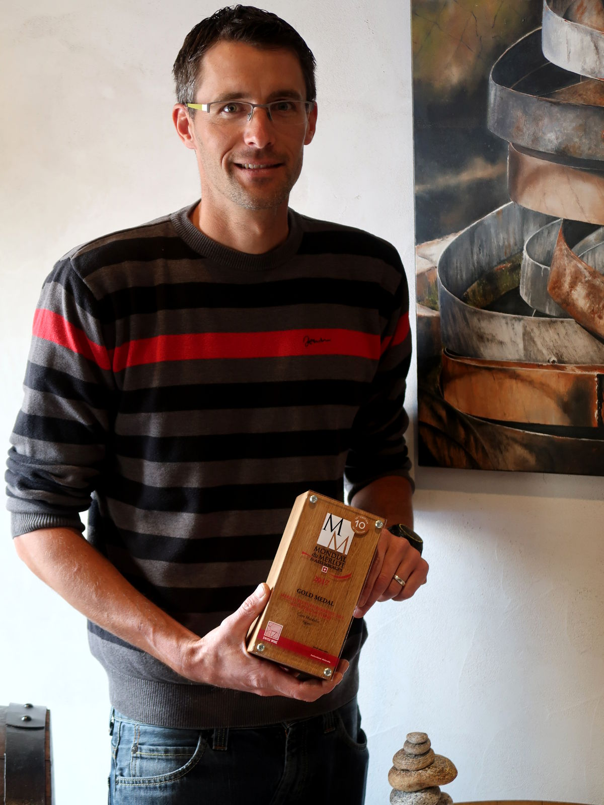

le vigneron
au cœur des côtes de l’orbe, un grand gaillard, élancé, tu crois que c’est le régent ou un coureur de fond te reçoit derrière un grand sourire comme celui que t’affiches quand tu gagnes à la loterie
ben lui a gagné il est médaillé d’or au mondial du merlot 2017 de zurich (pour son merlot en barrique 2015, récompense déjà reçue en 2014 pour son 2012)
et sa vitrine est pleine d’autres distinctions c’est que pierre-yves poget est vigneron de fond qui travaille ses quatre hectares en famille et qui apporte tous les soins nécessaires à atteindre les sommets tel le soigneur et son athlète aux jeux olympiques
déguster
côte de bellevue 2016
vous serez étonnés par le soleil, le fruit et son bon goût de chasselas qui te tapissent le gosier : verse !
savagnin rose aromatique 2016
acidité et maturité font ici bon ménage et donnent une élégance à ce vin qui t’enchantera avec un gâteau aux pommes à tomber par terre
pinot noir 2016
un vrai pinot vaudois, équilibré et très sympa
gamaret – garanoir 2015
la surprise de cette première dégustation
quelle saveur et quelle envie de prolonger la dégustation
découvrir
bien entendu son merlot barrique 2015 (seulement en 70 cl)
ses vins d’appellation côtes de l’orbe te surprendront et t’enchanteront par leur élégance, leur équilibre et leur saveur
il est intéressant de noter ici (et c’est le professeur ès raisins qui t’en verse une) que les côtes de l’orbe sont une des régions vinicoles les plus séches du canton
qui ?
Pierre-Yves Poget
Vigneron-encaveur
Cave Mirabilis
Route de Bretonnières 16A
1352 Agiez
024 441 43 21 – 079 320 85 09 – pypoget@vins-poget.ch – www.vins-poget.ch
y aller
sur l’autoroute qui te mène de lausanne à yverdon-les-bains, tu sors à chavornay et prends la direction d’orbe par la route cantonale
après un giratoire à l’entrée d’orbe qui t’invite à boire un café, tu prends la route qui monte en direction de la vallée de joux
au carrefour en haut dessus tu tournes à gauche et après quelques tours de roue tu verras la direction agiez
tu sors d’orbe et te retrouve au mileu des champs
au bas de la dérupe tu prends à droite vers bretonnières
cent mètres à gauche la cave mirabilis
le resto
Rôtisserie Au Gaulois
Route des Dîmes 3
1323 Romainmôtier
024 453 14 89 – augaulois@bluewin.ch – www.au-gaulois.com
sympa
il dispose d’un magnifique carnotzet
le samedi 9 septembre 2017, il y a le semi-marathon des côtes de l’orbe